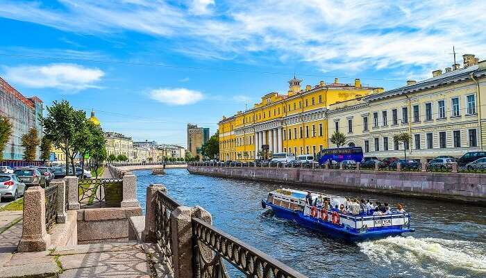
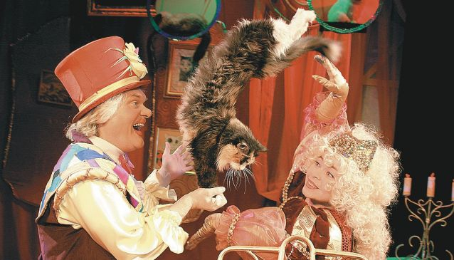

Home
Hotel and Restaurant
Travel
Other
Home
Hotel and Restaurant
Travel
Other
One of the best Russia activities is to go on a canal tour. A memorable thing to do in St. Petersburg is to take these tours owing to the abundance of canals in the city. There are over 800 bridges crossing a total length of 300 kilometers of artificial canals that you’ll be able to see on your voyage.

Make your evening magical by spending it at this picturesque Opera theatre amid Russia’s enchanting folklore. From the decorations, ballet, symphony orchestra, costumes, music, to the dancing, everything here is absolutely fantastic!
Location: Ploshchad’ Kuybysheva, 1, Samara, Samarskaya oblast’, Russia, 443010
Timings: 10 AM – 7 PM

Located on the outskirts of Moscow, Star City is a cosmonaut training center where you can take a leap into the future while diving into the past. Many years ago, the Soviet military facility took secrecy to such extreme levels that this place wasn’t listed on any map. If you are looking for an unforgettable experience, partake in a simulated rocket launch or a zero-gravity flight and is most definitely one of the crazy things to do in Russia.
Location: Zvyozdny gorodok, Moscow Oblast, Russia, 141160
Timings: 8 AM – 6 PM
A circus that revolves around felines, this show is widely popular in Russia for various reasons. There are more than hundred cats “actors” who join their human counterparts and perform stunts like balancing on a ball or walking a tightrope. However, it has been criticised for animal torture and many animal rights activities classify this as one of the things not to do in Russia.

Dargavs Village is called as the ‘city of the dead’ and this mystifying destination is known for numerous unusual stories. The village has an ancient cemetery where people buried their loved ones with their clothes and other important belongings. The village has over 100 ancient stone crypts and myths and folklore of this place will surely give you an adrenaline rush. According to the locals the entire area was affected by plague in the 18th century which resulted in massive number of deaths here.
Location: Dargavs, 363128, Russia